Next: 8. ChangeLog Up: 7. The fit Command: Previous: 7.5 The Correlation Matrix Contents Index
Throughout the preceding sections, the uncertainties in the supplied target
values  have been denoted
have been denoted  (see section 7.1).
The user has the option of supplying these in the source datafile, in which
case the provisions of the previous sections are now complete; both
best-estimate parameter values and their uncertainties can be calculated. The
user may also, however, leave the uncertainties in
(see section 7.1).
The user has the option of supplying these in the source datafile, in which
case the provisions of the previous sections are now complete; both
best-estimate parameter values and their uncertainties can be calculated. The
user may also, however, leave the uncertainties in  unstated, in which
case, as described in section 7.1, we assume all of the data
values to have a common uncertainty
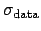, which is an
unknown.
unstated, in which
case, as described in section 7.1, we assume all of the data
values to have a common uncertainty
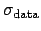, which is an
unknown.
In this case, where 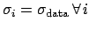, the best fitting parameter values are independent of , but the same is not true of the uncertainties in these values, as the terms of the Hessian matrix do depend upon . We must therefore undertake a further calculation to find the most probable value of , given the data. This is achieved by maximising 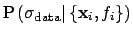. Returning once again to Bayes' Theorem, we can write:
| 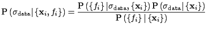 | (7.17) |
As before, we neglect the denominator, which has no effect upon the
maximisation problem, and assume a uniform prior
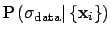. This reduces the
problem to the maximisation of
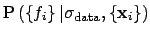, which we may
write as a marginalised probability distribution over
 :
:
Assuming a uniform prior for
 , we may neglect the latter term in
the integral, but even with this assumption, the integral is not generally
tractable, as
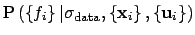 may well
be multimodal in form. However, if we neglect such possibilities, and assume
this probability distribution to be approximate a Gaussian globally,
we can make use of the standard result for an
, we may neglect the latter term in
the integral, but even with this assumption, the integral is not generally
tractable, as
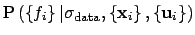 may well
be multimodal in form. However, if we neglect such possibilities, and assume
this probability distribution to be approximate a Gaussian globally,
we can make use of the standard result for an
 -dimensional Gaussian integral:
-dimensional Gaussian integral:
| 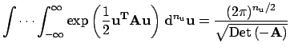 | (7.19) |
We may thus approximate equation (7.18) as:
| 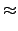 | (7.20) | ||
| 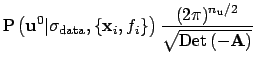 |
As in section 7.2, it is numerically easier to maximise this
quantity via its logarithm, which we denote  , and can write as:
, and can write as:
| 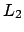 | 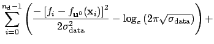 | (7.21) | |
| 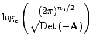 |
This quantity is maximised numerically, a process simplified by the fact that
 is independent of
.
is independent of
.
Dominic Ford, 24 November 2006